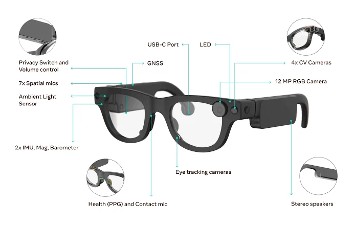
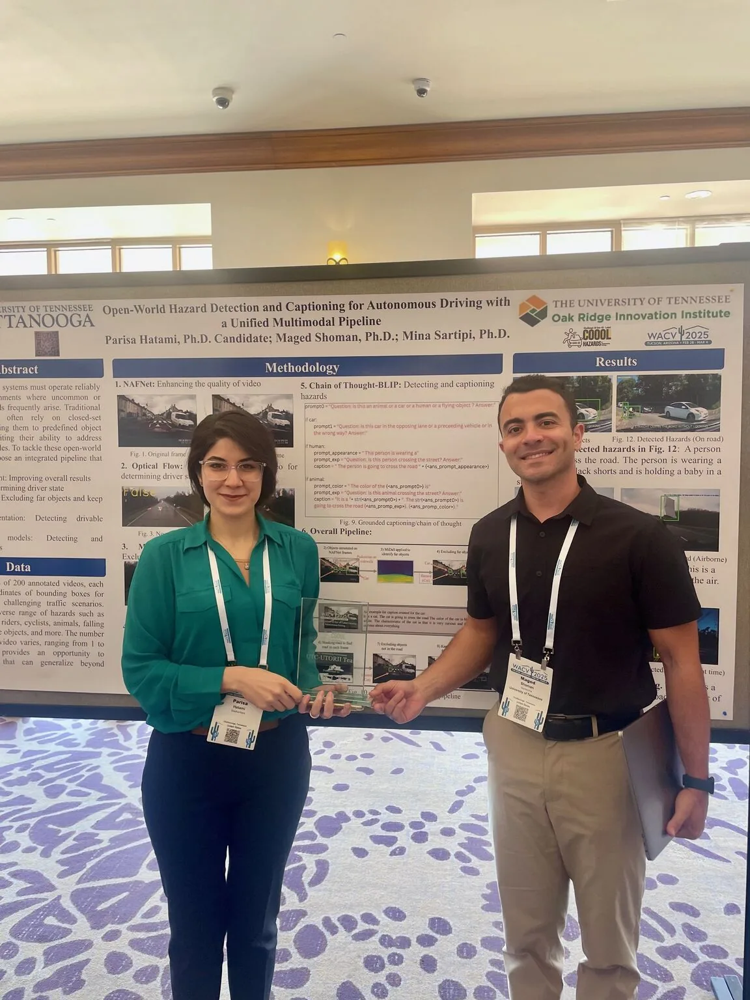
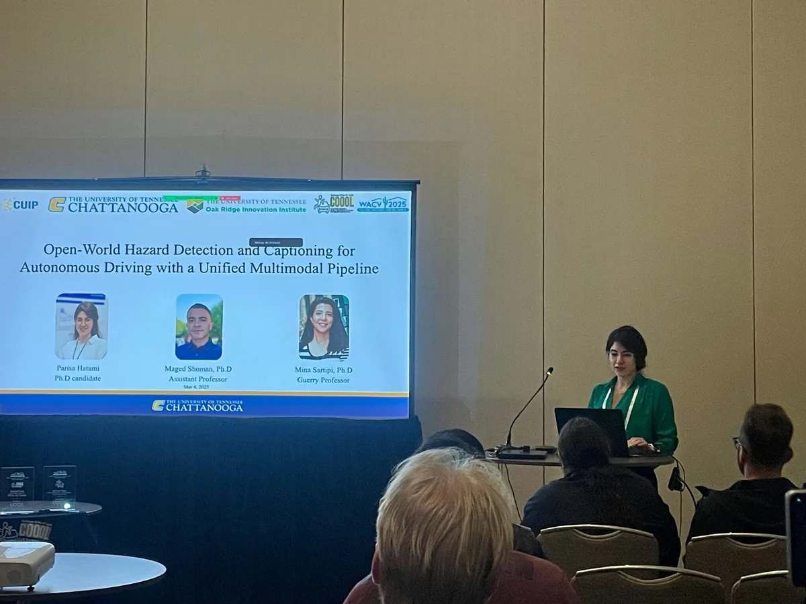
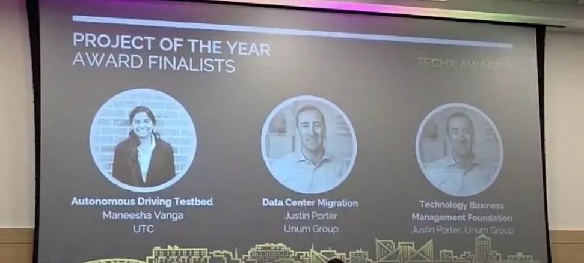
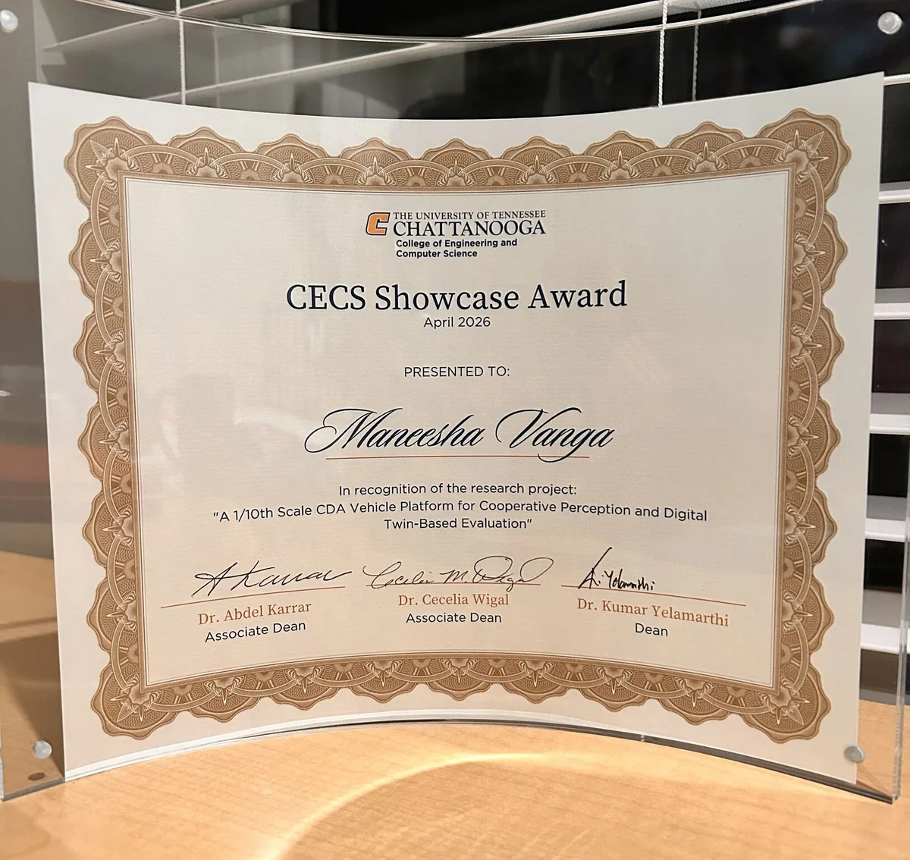
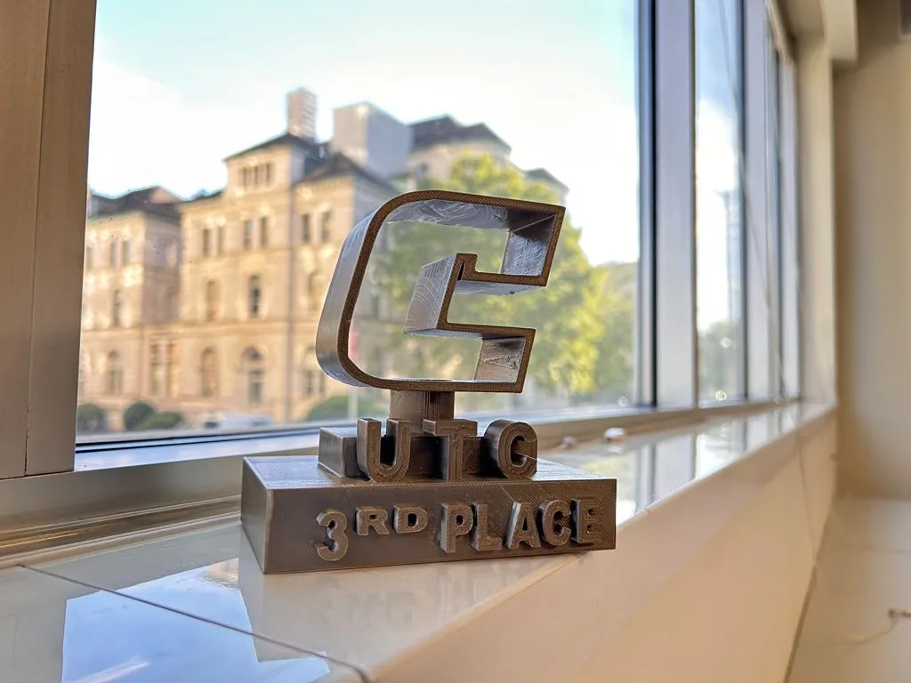
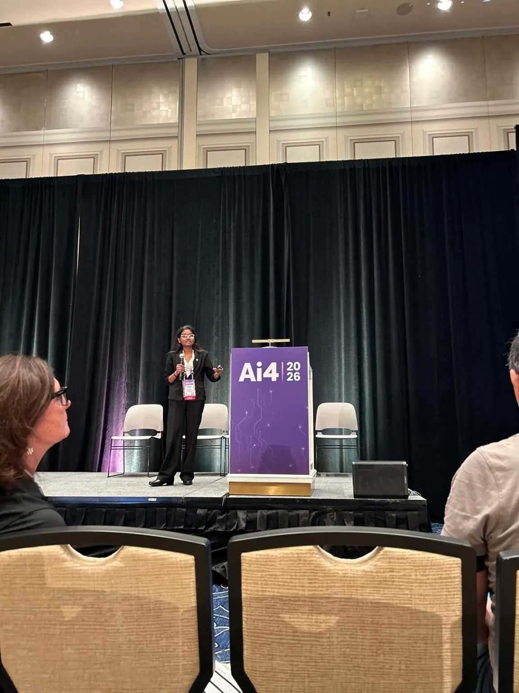
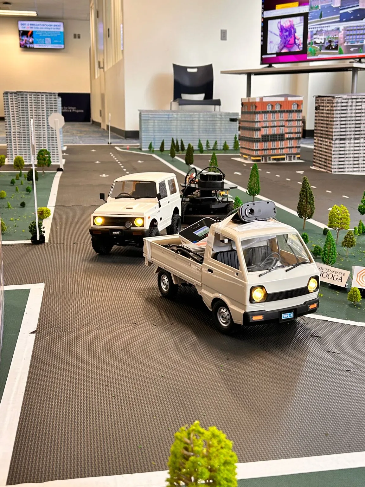

Students
Doctoral students I advise or co-advise. Their work and the awards below are their own.
Galen Avram
Ph.D. student at the University of Tennessee-Oak Ridge Innovation Institute, recently started. He works on the Meta Reality Labs project, using Project Aria research glasses to study pedestrian navigation. The glasses carry eye-tracking and world-facing cameras, spatial microphones, inertial sensors and GNSS, which makes them a way to record what a pedestrian actually attends to while walking rather than inferring it after the fact.

Parisa Hatami
Ph.D. candidate at the Center for Urban Informatics and Progress. She works on open-world perception: detecting and describing hazards that fall outside the closed set of categories a detector was trained on, which is the case that matters most for autonomous driving. She is first author on two papers with me, on open-world hazard detection and captioning and on graph-based tracking of unlabeled radar point clouds, accepted to Transportation Research Record.
Recognition
-
Third place, COOOL challenge at IEEE/CVF WACV 2025, Tucson, for
“Open-World Hazard Detection and Captioning for Autonomous Driving with a Unified
Multimodal Pipeline.”

Presentations
-
“Open-World Hazard Detection and Captioning for Autonomous Driving with a Unified
Multimodal Pipeline,” IEEE/CVF WACV Workshops, Tucson, March 2025.

Maneesha Vanga
Ph.D. student in Computational Science at the University of Tennessee at Chattanooga and a graduate research assistant at the Center for Urban Informatics and Progress. Her research is on infrastructure-assisted perception: how instrumented roadside infrastructure can extend an autonomous vehicle's awareness beyond its own onboard field of view, particularly where the view is occluded. She leads work on the 1/10th-scale cooperative driving automation testbed.
Recognition
-
Project of the Year Award, 2026 TechX Awards, for the Autonomous Driving
Testbed. Also a finalist for the AI Innovation Award.

-
CECS Showcase Award, University of Tennessee at Chattanooga College of
Engineering and Computer Science, April 2026, for “A 1/10th Scale CDA Vehicle Platform
for Cooperative Perception and Digital Twin-Based Evaluation.”

-
Third place, 2026 Graduate Student Three-Minute Thesis competition, UTC
Graduate School and URaCE, for “Smarter Infrastructure for Safer Autonomous
Driving.”

Presentations
-
“Experimental Evaluation of Infrastructure-Assisted AI for Occluded Driving Scenarios in
1/10-Scale Autonomous Vehicles,” Applied AI Research Conference, held with Ai4 2026,
Las Vegas.

-
“1/10th-Scale Car: A Mini-Testbed for Autonomous and Off-Road Vehicle Research,”
Chattanooga Connect, with a live demonstration on the mini-city track contrasting a connected
vehicle against a human-driven one at an occluded intersection.
